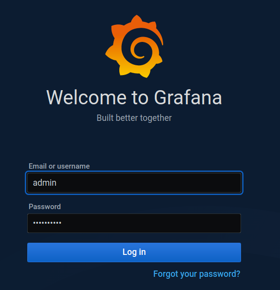
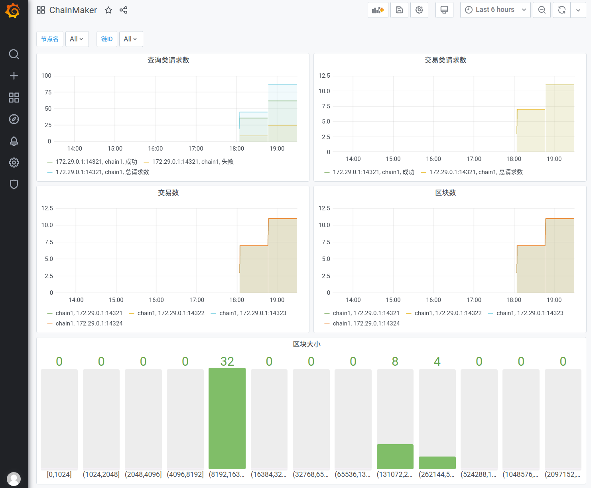

2. 运维监控¶
2.1. 概述¶
长安链采用了普罗米修斯（Prometheus）的监控体系，提供了脚本文件，帮助用户快速搭建基于Docker的普罗米修斯可视化监控环境，并基于该环境进行长安链节点的可视化监控。
2.2. 环境依赖¶
2.2.1. docker¶
centos系统
参考：https://docs.docker.com/engine/install/centos/
$ yum install docker-io
$ service docker restart
Redirecting to /bin/systemctl restart docker.service
ubuntu系统
参考：https://docs.docker.com/engine/install/ubuntu/
$ sudo apt-get remove docker docker-engine docker.io containerd runc
$ sudo apt-get update
$ sudo apt-get install \
apt-transport-https \
ca-certificates \
curl \
gnupg \
lsb-release
$ curl -fsSL https://download.docker.com/linux/ubuntu/gpg | sudo gpg --dearmor -o /usr/share/keyrings/docker-archive-keyring.gpg
$ echo \
"deb [arch=amd64 signed-by=/usr/share/keyrings/docker-archive-keyring.gpg] https://download.docker.com/linux/ubuntu \
$(lsb_release -cs) stable" | sudo tee /etc/apt/sources.list.d/docker.list > /dev/null
$ sudo apt-get update
$ sudo apt-get install docker-ce docker-ce-cli containerd.io
2.2.2. docker-compose¶
参考：https://docs.docker.com/compose/install/
$ sudo curl -L "https://github.com/docker/compose/releases/download/1.28.6/docker-compose-$(uname -s)-$(uname -m)" -o /usr/local/bin/docker-compose
$ sudo chmod +x /usr/local/bin/docker-compose
2.3. 操作步骤¶
2.3.1. 链启动¶
详细说明，请见【快速入门】，这里描述下关键步骤
注：配置文件
chainmaker/config/config_tpl/chainmaker.yml的monitor开关需要开启，默认是开启状态monitor: enabled: true
# 进入脚本目录
$ cd chainmaker-go/scripts
# 创建单链4节点集群配置文件及证书
$ ./prepare.sh 4 1
# 生成安装包
$ ./build_release.sh
# 启动链
$ ./cluster_quick_start.sh normal
# 查看节点启动情况
$ ps -ef|grep chainmaker
jason 30219 2326 3 17:56 pts/5 00:00:03 ./chainmaker start -c ../config/wx-org1.chainmaker.org/chainmaker.yml
jason 30239 2326 4 17:56 pts/5 00:00:03 ./chainmaker start -c ../config/wx-org2.chainmaker.org/chainmaker.yml
jason 30256 2326 4 17:56 pts/5 00:00:03 ./chainmaker start -c ../config/wx-org3.chainmaker.org/chainmaker.yml
jason 30277 2326 4 17:56 pts/5 00:00:03 ./chainmaker start -c ../config/wx-org4.chainmaker.org/chainmaker.yml
2.3.2. 配置修改¶
2.3.2.1. 配置Prometheus监控目标¶
配置文件路径：
chainmaker-go/monitor/prometheus.yml修改以下配置：
job_name：为节点的org_id
targets：为节点地址
- job_name: 'wx-org1.chainmaker.org'
scrape_interval: 1s
static_configs:
- targets: ['172.29.0.1:14321']
- job_name: 'wx-org2.chainmaker.org'
scrape_interval: 1s
static_configs:
- targets: ['172.29.0.1:14322']
- job_name: 'wx-org3.chainmaker.org'
scrape_interval: 1s
static_configs:
- targets: ['172.29.0.1:14323']
- job_name: 'wx-org4.chainmaker.org'
scrape_interval: 1s
static_configs:
- targets: ['172.29.0.1:14324']
2.3.2.2. 配置Grafana¶
配置文件路径：
chainmaker-go/monitor/grafana.ini主要是修改
[database]栏位配置，其他配置按需修改
[database]
type = mysql
host = 172.29.0.5:3306
name = grafana
user = chainmaker
password = chainmaker
url =
2.3.2.3. MySQL账号创建¶
执行脚本：
chainmaker-go/monitor/mysql.sql
CREATE DATABASE grafana DEFAULT CHARACTER SET utf8mb4;
CREATE USER 'chainmaker'@'%' IDENTIFIED BY 'chainmaker';
GRANT all privileges ON grafana.* TO 'chainmaker'@'%';
FLUSH PRIVILEGES;
2.3.3. 组件启动¶
$ docker-compose -f docker-compose.yml up -d
Creating network "monitor_prometheus" with driver "bridge"
Creating volume "monitor_prometheus_data" with default driver
Creating volume "monitor_influxdb_data" with default driver
Creating volume "monitor_grafana_data" with default driver
Creating volume "monitor_mysql_data" with default driver
Creating mysql ...
Creating influxdb ...
Creating influxdb
Creating influxdb ... done
Creating prom ...
Creating prom ... done
Creating grafana ...
Creating grafana ... done
2.3.4. 配置Influx¶
2.3.4.1. 创建账号和数据库¶
$ docker exec -it influxdb bash
root@influxdb:/# influx
Connected to http://localhost:8086 version 1.8.1
InfluxDB shell version: 1.8.1
> CREATE USER chainmaker WITH PASSWORD 'chainmaker' WITH ALL PRIVILEGES;
> CREATE DATABASE prometheus;
2.3.4.2. 查看表¶
> use prometheus;
Using database prometheus
> show measurements;
name: measurements
name
----
chainmaker_committer_metric_block_commit_time_bucket
chainmaker_committer_metric_block_commit_time_count
chainmaker_committer_metric_block_commit_time_sum
chainmaker_committer_metric_block_counter
chainmaker_committer_metric_block_size_bucket
chainmaker_committer_metric_block_size_count
chainmaker_committer_metric_block_size_sum
chainmaker_committer_metric_tx_counter
chainmaker_grpc_grpc_msg_received_time_bucket
chainmaker_grpc_grpc_msg_received_time_count
chainmaker_grpc_grpc_msg_received_time_sum
chainmaker_grpc_grpc_msg_received_total
chainmaker_proposer_metric_block_package_time_bucket
chainmaker_proposer_metric_block_package_time_count
chainmaker_proposer_metric_block_package_time_sum
chainmaker_rpcserver_metric_invoke_request_counter
chainmaker_rpcserver_metric_query_request_counter
chainmaker_scheduler_metric_vm_run_time_bucket
chainmaker_scheduler_metric_vm_run_time_count
chainmaker_scheduler_metric_vm_run_time_sum
chainmaker_txpool_metric_tx_pool_size
chainmaker_verifier_metric_block_verify_time_bucket
chainmaker_verifier_metric_block_verify_time_count
chainmaker_verifier_metric_block_verify_time_sum
etcd_disk_wal_fsync_duration_seconds_bucket
etcd_disk_wal_fsync_duration_seconds_count
etcd_disk_wal_fsync_duration_seconds_sum
etcd_disk_wal_write_bytes_total
......

2.3.6. 配置Grafana¶
2.3.6.1. 登录控制台¶
http://localhost:3000/login
用户名：
admin密码：
chainmaker
2.3.6.2. 添加数据源¶
http://localhost:3000/datasources
选择Prometheus数据源，填入URL后，点击Save & Test按钮进行测试，测试通过会显示Data source is working的提示。

2.3.6.3. 导入仪表盘¶
http://localhost:3000/dashboard/import
仪表盘模板存放路径：
chainmaker-go/monitor/dashboard.json

2.4. 监控效果展示¶
导入仪表盘后，便可查看到监控效果